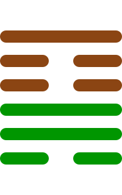

第十八卦
蛊卦

卦辞
元亨，利涉大川。先甲三日，后甲三日。
蛊卦象征腐败、弊端与革新。卦辞意为：大亨通，有利于涉越大河。先甲三日，后甲三日。蛊卦教导我们要整顿弊端，革除腐败，但要选择合适的时机。
彖传
蛊，刚上而柔下，巽而止，蛊。蛊，元亨而天下治也。利涉大川，往有事也。先甲三日，后甲三日，终则有始，天行也。
彖传说：蛊，刚健在上而柔顺在下，谦逊而停止，就是蛊。蛊，大亨通而天下得到治理。有利于涉越大河，是前往有事做。先甲三日，后甲三日，终而复始，是天的运行。
象传
山下有风，蛊。君子以振民育德。
象传说：山下有风，就是蛊卦。君子应当效法这种精神，振奋民众，培育德行。风在山下，象征需要整顿弊端，君子要教化民众。
爻辞
初六：干父之蛊，有子，考无咎，厉终吉
纠正父亲的弊端，有儿子，父亲没有灾害，危险最终吉祥。
初六爻位于最下方，纠正父辈的错误。儿子能够纠正父亲的弊病，父亲不会有灾害，虽然过程危险但最终吉祥。
九二：干母之蛊，不可贞
纠正母亲的弊端，不可坚守正道。
九二爻得中得正，处理母辈问题。纠正母亲的弊病需要温和，不可过于刚直，要讲究方式方法。
九三：干父之蛊，小有悔，无大咎
纠正父亲的弊端，小的悔恨，没有大的灾害。
九三爻位置得当，纠正父辈错误。纠正父亲的弊病时会有小的悔恨，但不会有大的灾害，总体是好的。
六四：裕父之蛊，往见吝
宽容父亲的弊端，前往见到困难。
六四爻接近君位，过于宽容。对父亲的弊病过于宽容，不去纠正，这样下去会遇到困难。
六五：干父之蛊，用誉
纠正父亲的弊端，获得声誉。
六五爻居中尊位，成功纠正。能够纠正父亲的弊病，并且获得声誉，表示革新的成功。
上九：不事王侯，高尚其事
不侍奉王侯，高尚其事业。
上九爻位于极点，超然物外。不参与世俗事务，保持高尚的品德和事业，表示另一种处世方式。